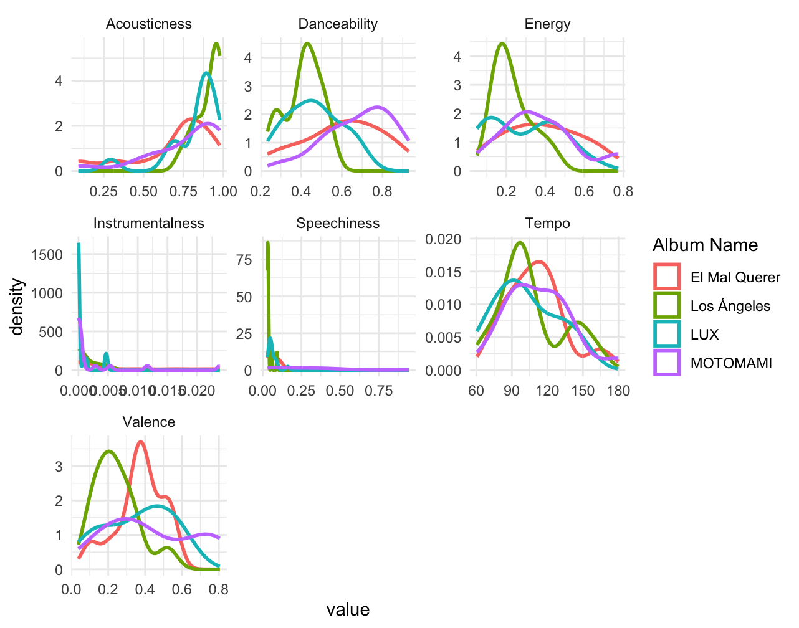

This portfolio investigates the artistic and sonic evolution of Rosalía, a Spanish artist whose work bridges traditional flamenco roots with experimental pop and electronic production. In this project, I will apply computational musicology techniques to trace how her sound has transformed across her studio albums, from her debut to the most recent release in 2025.
Before starting with the most technical side of this research, I would like to introduce the artist about whom I will be talking about. Rosalía Vila Tobella, known simply as Rosalía, is a Spanish singer, songwriter, and producer born near Barcelona in 1992 who has become one of the most influential figures in contemporary global pop. Influenced by flamenco artists such as Camarón de la Isla, she started her formal musical training at a very young age in the Escola Superior de Música de Catalunya (ESMUC), where she specialized in flamenco. Her final degree project at ESMUC, inspired by the medieval Occitan novel Flamenca, crystallized in her second studio album “El mal querer”, conceived as a chapter‑based concept album. From there, with Motomami and later releases, Rosalía expands her palette even further into reggaeton, hyperpop, electronica, bachata, and other genres, while maintaining a strong sense of conceptual unity. Her combination of narrative concepts with a more experimental sound took her to the top turning her into one of the most internationally-recognized Spanish artists of all time.
Going back to the investigation, in order to make it more focused, I will be analyzing one representative song from each of her released studio albums: “Los Angeles” (2017), “El Mal Querer” (2018), “Motomami” (2022) and “Lux” (2025). With this, I aim to analyze measurable musical features such as tempo, harmonic complexity, timbral qualities, and production layers while considering the aesthetic shifts that define each period of her career.
This study seeks to uncover whether Rosalía’s musical trajectory shows a linear progression, or maybe presents cyclical returns to earlier sounds that defies clear continuity. The combination of data-driven analysis and aesthetic interpretation aims to highlight how technology can illuminate the artistic evolution of one of the most dynamic figures in contemporary music.
The four chosen representative songs for this project are going to be: Catalina, Malamente, CUUUuuuuuute and Berghain. Here is a short explanation of this choice.
Catalina from “Los Angeles”: it is one of the most tradition-rooted songs from Rosalia’s discography. It really represents the earlier stage of her career where there is a predominance of flamenco elements in her music. Also, it is a low- production track that exemplifies the low budget she had when producing this first album.
Malamente from “El Mal Querer”: according by many, her biggest hit and the song that made her known internationally. It perfectly encapsulates her revolutionary fusion approach: the song opens with spontaneous flamenco handclaps (“palmas”) layered over moody electronic synth pads. Lyrically, it explores the theme of grief moving to a more personal storytelling than her previous album.
CUUUuuuuuute from “Motomami”: this track represents the peak of Rosalía’s hyperpop experimentation and one of the most radical sonic departures in her music career. This track embodies the album’s core concept of “Motomami”: ultra-processed, glitchy synth leads, pitch-shifted vocal chops: it is hypnotic. Lyrically, it starts mentioning topics related with God, which will be the guiding line of her next and most recent album.
Berghain from “Lux”: the presentation song (lead single too) of her most recent album “Lux” revolutionized everyone on first listen. Completely different from everything else she has done, a new aesthetic direction. Named after Berlin’s legendary techno club, the track marks her immersion into the dark. She abandons entirely the flamenco-pop and hyperpop hybrids of her previous work for something genuinely unknown to her music catalog.
That being said, let’s get into the most technical analysis of these four songs.
To trace Rosalía’s sonic evolution across her four representative tracks, I selected seven key Spotify audio features that best capture her transformation from intimate flamenco to electronic maximalism: acousticness, danceability, energy, tempo, and valence.
Each feature illuminates a different dimension of her artistic journey: acousticness reveals her shift from raw flamenco guitar to a studio-processed electronic sound; danceability portrays how her music becomes more club-friendly over time; energy measures the dynamic intensity shifts that her music has from her first to her last album; and valence maps the emotional arc from melancholic flamenco to euphoric hyperpop. Loudness will appear later in the similarity analysis section.
Here is a line plot to give a preview of all the features.

(Insert plots + interpretation)
(Insert plots + interpretation)
(Your clustering + explanation)
Final insights